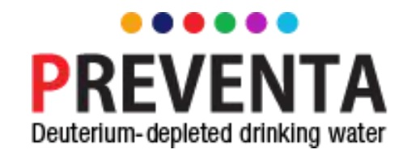

Helping prevent cancer and reduce its heavy toll on people and families has been
the driving force of my work and the work of Dr. Gabor Somlyai president of the
Preventa and the unquestioned leader in cancer treatments with
deuterium depleted water. We hope you will join us in supporting this important
research. Together we can stop cancer before it starts.
-Dr. T. Que Collins


All Donors Receive Rewards.*
Preventa America's Better Cancer Outcomes program is offering Donor
rewards
valued over $800.


Want to learn more?
We can answer your questions so you can decide if this study is right for you.
Simply Provide your name and email. Our team will contact you and send a link
to the application.
Thank you for your participation in this critical study -
and for leading by example.
*Better Cancer Outcomes maintains the right to change both the program and the individual
donor rewards received.
**Availability based on location.